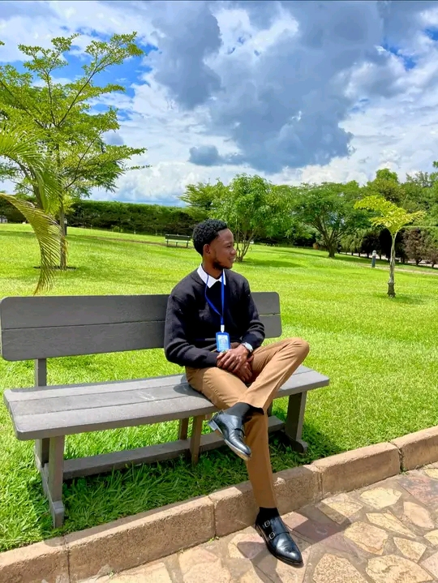

Mes projets A Propos de Moi
Bonjour je m'appelle John kitungwa amuri et je suis un étudiant dynamique et motivé en
Informatique à L'UDBL. Passionné par le developpement web, l'intelligence artificielle, et le
desin graphique, je suis constamment à la recherche de nouvelles opportunites
d'apprentissage et de défis stimulants.
Au cours de mes etudes, j'ai developpé des compétences en programmation, en gestion de projet et en travail J'ai participé à plusieurs projets académiques et personnels qui m'ont permis de mettre en pratique mes compétence Je suis également passionné par la création de contenu numérique et j'aime explorer les possibilités offert Je suis une personne rigoureuse, creative et j'aime travailleur en equipe pour atteindre des objectifs comme de nouvelles opportunités pour apprendre et grandir en tant que professionnel dans le domaine de l'informatique
Mes compétences
| CATEGORIE | COMPETENCES | NIVEAU |
|---|---|---|
| Programmation | HTML, CSS, JavaScript, Python | Avancé |
| Design | Figma, Photoshop (Bases) | Intermédiaire |
| Langues | Français (natif), Anglais (fluide) | Avancé |
| Outils | Git, VS Code, Suite Office | Avancé |
| Soft Skills | Communication, Résolution de problèmes, Autonomie | Expert |